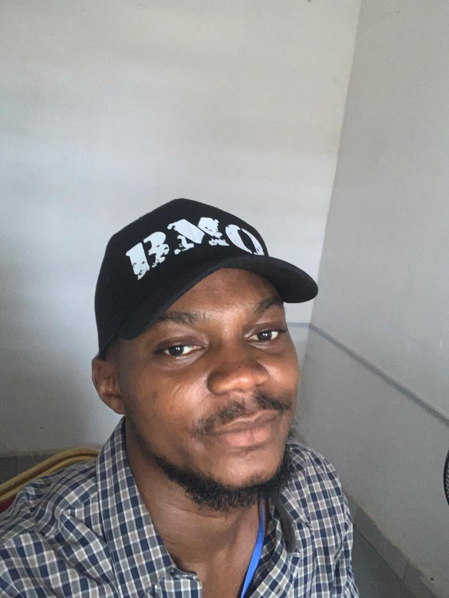

Orere Emmanuel | WDD 130

My name is Orere Emmanuel, and I am from Delta State, Nigeria. I currently reside in Asaba, the capital city of Delta State. I am a student at Brigham Young University (BYU) and enjoy learning new skills and expanding my knowledge. I consider myself a calm and collected person who enjoys a peaceful environment. I'm excited to continue growing both academically and personally.